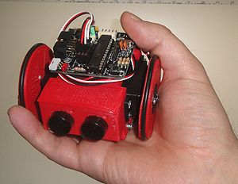
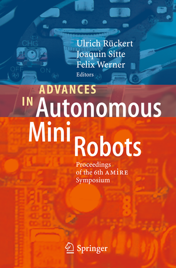
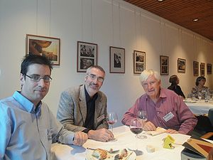
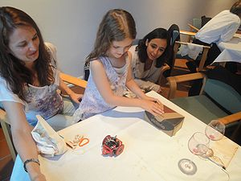
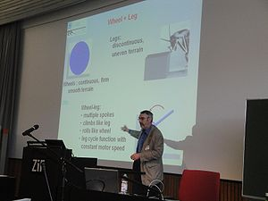
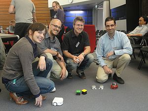

|  Miniskybot 1.0 (click to enlage) |
 A group of Miniskybots 1.0 (Click to enlarge) |
Paper reference
- Juan Gonzalez-Gomez, Alberto Valero-Gomez, Andres Prieto-Moreno, Mohamed Abderrahim (2011), A New Open Source 3D-printable Mobile Robotic Platform for Education, Proc. of the 6th International Symposium on Autonomous Minirobots for Research and Edutainment, May, 23-25. Bielefeld. Germany
Abstract
In this paper we present the Miniskybot, our new mobile robot aimed for educational purposes, and the underlying philosophy. It has three new important features: 3D-printable on low cost reprap-like machines, fully open source (including mechanics and electronics), and designed exclusively with open source tools. The presented robotic platform allows the students not only to learn robot programming, but also to modify easily the chassis and create new custom parts. Being open source the robot can be freely modified, copied, and shared across the Internet. In addition, it is extremely cheap, being the cost almost exclusively determined by the cost of the servos, electronics and sensors
Authors
- Juan González-Gómez, Alberto Valero, Andrés Prieto-Moreno, Mohamed Abderrahim
- Oral presentation: Juan Gonzalez-Gomez
Miniskybot Robot: Main page
|
|
Miniskybot robot, Main page |


Download


Conference paper
| amire2011-miniskybot.pdf | Paper (PDF) |
| Read On line in scribd | Paper On-line |
| 2011-Amire-Miniskybot-src.zip | Paper sources (Lyx) |
| 2011-05-23-Amire-miniskybot.pdf | Slides, in PDF |
| 2011-05-23-Amire-miniskybot.odp | Slides, in Openoffice format (ODP) |
| Slides on line | Read the Slides on-line in Scribd |
Extended version
- Published in the book: Advances in Autonomous Mini Robots Advances in Autonomous Mini Robots, Springer Book. ISBN 978-3-642-27481-7.
| Miniskybot-extended-version.pdf | Paper (PDF) |
| Miniskybot-Extended-version.zip | Paper and figure sources (Lyx,tex, inkscape) |
Pictures
| Photo Album |
|---|
Log
|  From left to right: Juan Gonzalez-Gomez, Roger Quinn and Joaquin Sitte (click to enlage) |
 A girl playing with the Miniskybot robot during the welcome dinner (click to enlage) |


|  Roger Quinn during his talk (click to enlage) |
 From left to the right: Fanny Riedo (Thymos), Eckard Riedenklau (TAO), Alexander Kettler (Wanda) and Juan Gonzalez-Gomez (MiniSkybot) (click to enlage) |


Links
- Miniskybot Robot. Main page (in spanish)
- Miniskybot. MRGroup page
- Miniskybot 1.0. Thingiverse
- AMiRE 2011: 6th Symposium on Autonomous Minirobots for Research and Edutainment
- Thymio II Robot
News
- 2012/April/17th: Extended version added
- 2011/May/28th: This page is published!